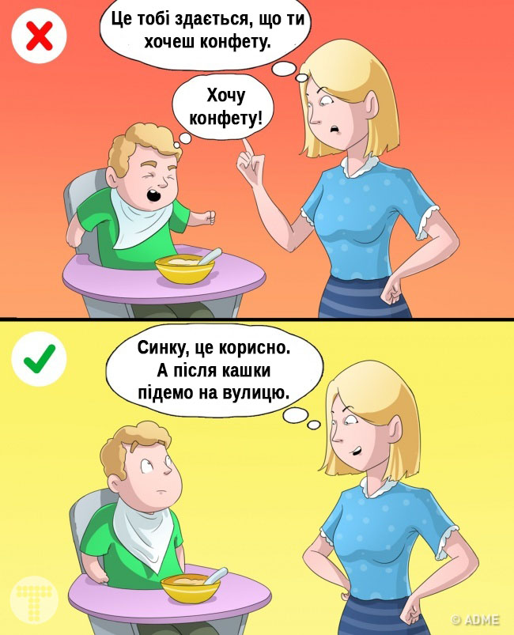

Іноді прагнення батьків підстелити соломки своєму чаду переходить всі межі. Ми, дорослі, не можемо прожити життя за дітей. Наша справа — допомагати їм рости і набиратися досвіду. І тут важливо не перегнути палицю.
Ми зібрали список речей, які ніколи не треба робити за дітей. Врахуйте це і сини, і доньки скажуть вам спасибі.
1. Говорити замість дітей
Все починається з тих радісних моментів, коли на запитання на адресу карапуза: «Ой, а як же нас звуть?» ми поспішаємо відповісти: «Сашенька». Добре, якщо б ця звичка закінчувалася разом з освоєнням дитиною техніки мовлення. Так ж ні, ми примудряємося відповідати і за дітей-підлітків — в гостях, у магазині, навіть вдома.
І що маємо в результаті? Своїми ж руками забираємо у сина або дочки шанс навчитися відповідати за себе. Можна підказати, що потрібно говорити, якщо дитина просить. Але брати ініціативу в свої руки точно не потрібно.
Як бути? Наступного разу, коли виникає спокуса сказати за дитину, спробувати стриматися і дати слово їй самій.
2. Намагатися стати другом
Багато хто з нас прагне стати друзями своїх дітей, та такими, від яких немає таємниць. Таке бажання мами чи тата цілком можна зрозуміти. Але давайте копнемо глибше. Хто такий друг? Це людина, яка з нами на рівних, на одному рівні. Так, йому можна все розповісти, але нерозумно розраховувати, що він завжди прикриє тобі спину.
У батьків інша роль — дбайливих і люблячих старших. Спроби занадто близько дружити не потрібні, нехай діти шукають друзів серед ровесників. А до мами і тата прийдуть за безумовною любов’ю і підтримкою, коли це потрібно.
Як бути? Відмовитися від панібратства у відносинах, виховувати взаємну повагу і підтримку.
3. Хотіти

Ми добре знаємо, що брокколі корисніше цукерок, а нові кросівки потрібніші, ніж ляльки. Ось і диктуємо дітям, явно чи приховано, що і як вони повинні хотіти. А там, як в анекдоті: «Мама, я хочу їсти?» «Ні, синку, ти замерз і хочеш зігрітися».
До чого призводять такі спроби? До придушення власного «я», своїх бажань і цілей. А також до звички відчувати себе безвольною жертвою, а якщо дитина «з характером» — то до закономірного бунту проти вас і всього світу.
Як бути? Шукати потреби та бажання дитини. А якщо потрібно навчити корисним звичкам, робити це без насильства, не через «треба», а через «добре».
4. Обслуговувати себе
Вже 2-3-річна дитина може сама знімати з себе і одягати багато предметів одягу, споліскувати за собою чашку і закидати брудні штанці в пральну машинку. Мало того, в цьому віці у дітей є величезне бажання все робити самим.
І що ж робимо ми? Одягаємо мало не до весілля, аргументуючи поспіхом і тим, що «сама вона не вміє». Годуємо з ложечки, забороняючи їсти самій і пізнавати різні смаки. Забороняємо самодіяльність. А потім дивуємося, що підліток не хоче допомагати мамі і поводиться необережно.
Як бути? По мірі можливості дозволяти дитині обслуговувати себе самій.
5. Вибирати смаки
Ми часто несвідомо намагаємося нав’язати дітям свої музичні вподобання, книжкові уподобання, стиль в одязі. І начебто добрий намір, але в підсумку він стирає індивідуальність дитини. А у багатьох випадках викликає справедливий протест з бажанням робити все навпаки.
Як бути? Самим слухати свою музику і дивитися улюблені фільми, а з дітьми говорити про їхніх кумирів.
6. Рахувати гроші
В житті кожної дитини рано чи пізно настає момент, коли у неї з’являються кишенькові гроші. Ось тільки не треба перевіряти і влаштовувати допит, скільки залишилося, і вже тим більше шукати по кишенях і сумках. Довіра так втрачається вмить.
За великим рахунком, що нам з того, скільки грошей залишилося у сина чи доньки? Нехай собі збирає на щось цікаве або купує приємні дрібниці.
Як бути? Вчити дитину основам фінансової грамотності та довіряти їй самостійно розпоряджатися своїми грошима.
7. Вибирати захоплення та інтереси
Мамі так хочеться, щоб дочка грала на скрипці і вона готова возити її через все місто в музичну школу тричі на тиждень. А тато наполягає, щоб син кожен вечір бігав на тренуваннях з футболу. І найчастіше батьки підсвідомо намагаються нав’язати дітям або модне хобі, або власні нереалізовані амбіції.
Як бути? Набратися терпіння і спостерігати за дитиною, відзначаючи її власні інтереси і схильності. Питати, що їй подобається, що вона любить. А потім допомогти розвиватися в сфері її інтересів.
8. Привласнювати собі успіхи
Дбайливі інста-мами забивають стрічки сотнями фото з підписами «Ми поїли», «Ми поповзли», «Ми сіли на горщик». Звичайно, багато в чому це підтримка батьків, але все ж це не мамині успіхи, а дитини! Яке таке «ми»?
З ростом дитини ситуація стає ще серйознішою. І ось мами і тати вже можуть хвалитися, що «ми» закінчили інститут, влаштувалися на роботу. Нескладно здогадатися, як все це неприємно дітям.
Як бути? Радіти успіхам дітей, підтримувати їх, але не плутати з власними досягненнями.
9. Вибирати подарунки
Коли дитина вже може говорити, вона має право вибирати, що їй хочеться отримати в подарунок. І зовсім не обов’язково це — ще одна футболка чи «розумна» розвивальна річ.
Так, звичайно, такий підхід не завжди зручний. Але він дасть нашим дітям головне — вміння вибирати, приймати рішення та відповідати за його наслідки. У дорослому житті ці вміння зайвими точно не стануть.
Як бути? Дозволити дитині в межах можливого вибирати подарунки і покупки самій.
10. Влазити в особисте життя
Особливо, це стосується батьків підлітків. У дітей свої друзі, компанії, перша любов. Все це нормально і природно. Допити в ключі «Хто цей хлопчик?» викликають тільки роздратування і віддалення.
При цьому багато підлітків самі діляться з батьками таємницями, якщо будуть відчувати себе в безпеці.
Як бути? Замість допитів дозволити дитині мати особистий простір. Не розпитувати, якщо вона не налаштована на деталі. І, звичайно, ні під яким соусом не влазити у листування дітей.
Друзі, а які таємниці виховання дітей є у вас?